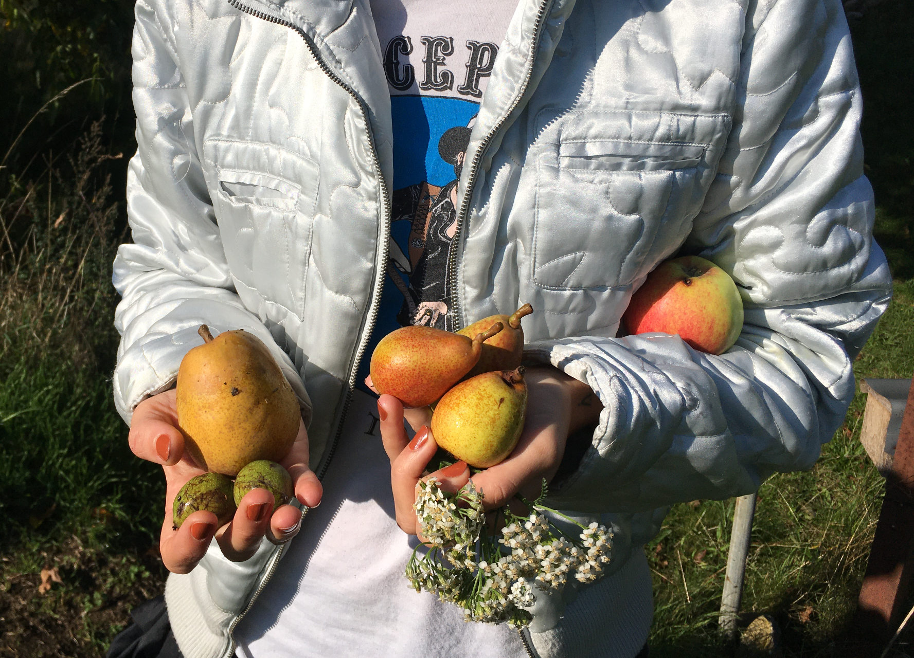
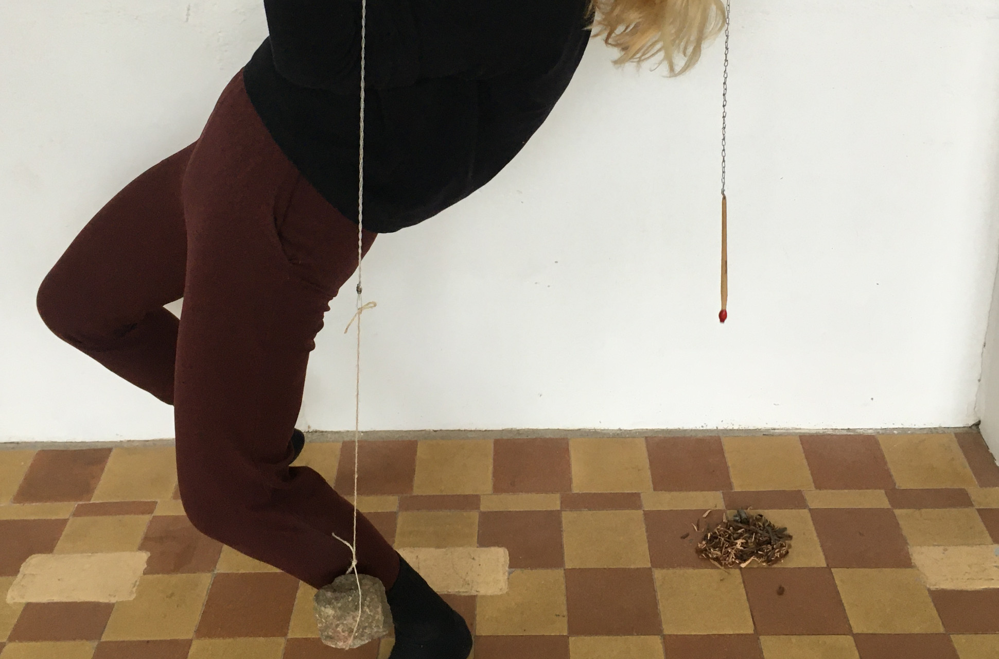
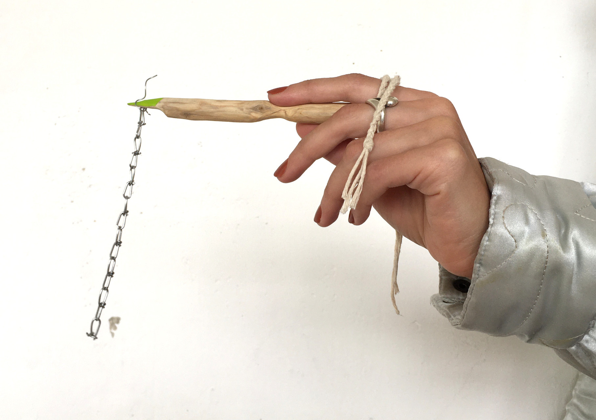
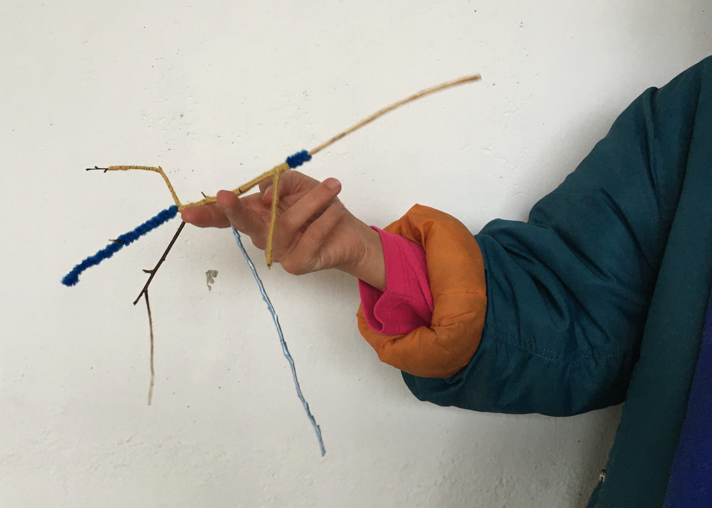

Libken
Group residency with Hooops collective in 2023 / 2023
"In May 2023 initiated by hoops (Astarte Posch, Daniella Mooney, Elisa Pieper, Jasmine Parsley) the Weeds Residency in Libken took place. Twelve artists were invited to engage in spontaneous vegetation, also known as weeds, to research and to develop their work collaboratively. The residence was funded by the #takeheart-Förderung (Funds Representing Arts and Fluff+Federal Network) and hosted and supervised by Libken. A little more than a year later, some of the works created during the residency appear as contributions in the next issue of the Plant Magic Magazine, which will be released on the 6th. July in Zabriskie bookstore will be presented as part of the series "WEEDS COLLECTIVES/UNKRAUT COLLECTIVE"."" https://libken.de/



